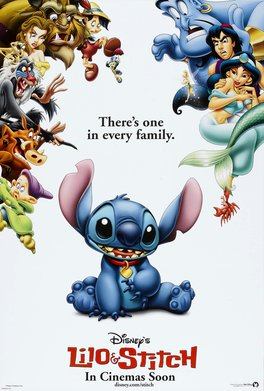

Lilo & Stitch
Lilo & Stitch is a 2002 American animated science fiction comedy-drama film produced by Walt Disney Feature Animation and released by Walt Disney Pictures.
Directed and Written by: Chris Sanders and Dean DeBlois
Running time: 85 minutes
Distributed by: Buena Vista Pictures
It features Daveigh Chase and Sanders as the voices of the title characters, and also features the voices of Tia Carrere, David Ogden Stiers, Kevin McDonald, Ving Rhames, Jason Scott Lee, and Kevin Michael Richardson. It was also the second of three Disney animated feature films (the first being Mulan, followed by Brother Bear) that were produced primarily at the Florida animation studio in Disney's Hollywood Studios (then named "Disney-MGM Studios" during its production) at Walt Disney World near Orlando, Florida.
Plot
The film's story revolves around two individuals: a Hawaiian girl named Lilo Pelekai, who is raised by her older sister Nani after their parents' deaths, and a extraterrestrial creature called Experiment 626, who is adopted by Lilo as her "dog" and renamed "Stitch". Stitch, who was genetically engineered to cause chaos and destruction, initially uses Lilo to avoid recapture by the intergalactic federation after him, but they develop a close bond through the Hawaiian concept of ʻohana, or extended family, causing Stitch to reconsider his intended destructive purpose in order to keep his newfound family together.
Main Cast
- Daveigh Chase as Lilo Pelekai, an eccentric young Hawaiian girl on the island of Kaua'i who adopts Stitch as her pet dog.
- Chris Sanders as Stitch, a blue koala-like illegal genetic experiment with the ability to create untold chaos.
- Tia Carrere as Nani Pelekai, Lilo's stressed-out older sister and legal guardian after the death of their parents in a car accident.
- David Ogden Stiers as Dr. Jumba Jookiba, a Kweltikwan mad scientist employed by Galaxy Defense Industries who created Stitch.
Live Action Adaptation
On October 3, 2018, The Hollywood Reporter announced that Walt Disney Pictures is developing a live-action remake of Lilo & Stitch. It was also announced that the film would be produced by Aladdin producers Dan Lin and Jonathan Eirich and written by Mike Van Waes.